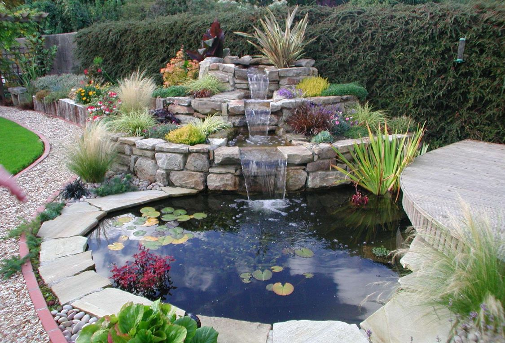
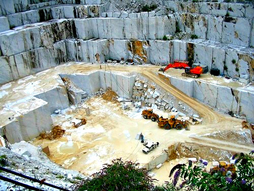

Somos una empresa dedicada a la transformación de la piedra natural en obras de arte. Trabajamos en Ónix, Mármol y Granito de procedencia nacional e importada, siendo especialistas en: Fuentes de agua, chimeneas, pedestales, tallados, ovalines, tableros de cocina, acabados en general y mucho más. Asimismo podemos hacer realidad el proyecto arquitectónico que usted tenga en mente.
Comprometidos con usted, nuestro principal compromiso, somos una empresa con más de 60 años de experiencia en el mercado nacional e internacional, cuyos productos han llegado a diferentes partes del Perú y el mundo.
Contamos con una cantera propia de Ónix, el cual es un material considerado semiprecioso, cuyas características de brillantez y translucidez la hacen única e insuperable para la realización de trabajos de iluminación.

Nuestra Cantera en los Andes Ayacuchanos
Ubicada a 3600 msnm, nuestra cantera de Ónix, la cual es una calcita cristalizada compacta formada por soluciones calcáreas y silíceas, y es de tipo fluido-glaciar, considerado como una piedra semipreciosa por sus diferentes tonalidades y colores; rosado, verde, blanco, perla, nacarado. Además de sus dibujos y texturas según el corte su alto grado de brillantes que le confiere un mayor nivel estético, por lo cual es usado generalmente en decoración de interiores e iluminación artificial con una belleza impresionante.
Responsabilidad Social
El onix explota canteras de un producto natural es decir trabaja en un ambiente libre de contaminantes. Nuestra responsabilidad abarca la minimización del impacto sobre el medio ambiente de los ecosistemas de la comunidad, e incluso la restauración de la tierra a su entorno natural después de terminada la explotación. Además trabajamos en conjunto con las comunidades para ayudarlas a desarrollar proyectos como: construcción de canales de riego, escuelas, carreteras e infraestructuras diversas; además de capacitar y formar a las personas con habilidades de trabajo para mejorar nuestro servicio.